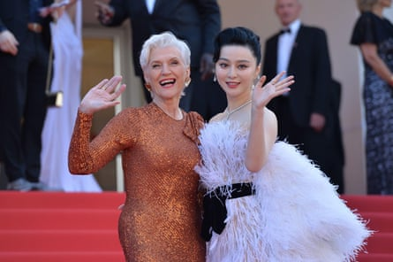
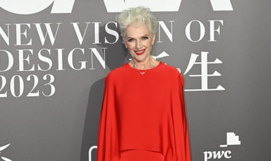
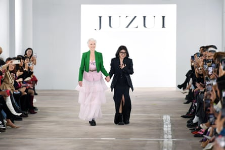

M aye Musk is a busy woman. As well as being the mother of the world’s richest man, she has been jetting between various glamorous events – many of them in China. In December alone, she attended a gala dinner in Hangzhou, walked the red carpet for a cosmetics company in Wuhan and signed copies of the Chinese edition of her book, A Woman Makes a Plan, which she described as “a bestseller” in China .
In fact, the only Musk-related book on the Chinese bestseller lists in October was a biography of her son Elon Musk by Walter Isaacson. Elon Musk is popular in China, and is thought to have the potential to wield pro-Beijing influence in the otherwise hawkish incoming administration of Donald Trump. But he has also faced scrutiny for his links to the US Department of Defense via his aerospace company, SpaceX.
Maye Musk, however, is adored in the country that she claims to visit “nearly every month” . She has been described as his secret weapon in China – a well-placed figure who can bring goodwill for her son’s increasingly global business and political ambitions.
And she has made her feelings about the country clear. “China is so advanced in roads, tunnels, buildings, infrastructure, and ports. Always impressed when I visit,” she tweeted in October. In November, she posted pictures of Teslas in Shanghai , along with adoring heart-eye emojis.
Maye Musk walking the red carpet at the Cannes film festival with Fan Bingbing, a Chinese actor.Photograph: Stefanie Rex/Alamy Live News/Dpa Picture Alliance/Alamy
The 76-year-old has a successful career as a model and a dietician. But her son’s extensive business dealings in China – his car company, Tesla , has its biggest factory in Shanghai and he is a frequent visitor to the country – have opened the door to a new market of admirers who have welcomed her with open arms.
Her story is becoming increasingly well-known in China . Born in Canada and raised in South Africa, she has travelled around the world for her career and family.
Several commenters on Douban, a review website, praise her independence. “As a female role model who is independent, self-reliant and in control of her own life, she has gained rich experience under the influence of her family since she was a child. Because of her life experience in many countries, she is more tolerant of culture and life, and chooses to leave her comfort zone again and again,” wrote one fan of her book.
Her profile has been boosted by a slew of brand collaborations. Last year, she became a global ambassador for the Chinese consumer electronics company Oppo. This year, she added the mattress company AISE Baobao to the list of companies that she represents, attending the brand’s store opening in Shanghai in November.
She has also walked the runway in Hangzhou for the Chinese fashion label JNBY and attended an event for the sportswear brand Fila. In October, she attended a party for the Italian luxury fashion brand Moncler in Shanghai , sharing photographs of her posing with Rihanna and A$AP Rocky on her Chinese social media accounts.
Maye Musk attending a fashion show in Shanghai.Photograph: VCG/Getty Images
The commercial endorsements have helped her to build a sizeable following on Chinese social media. She has 577,000 followers on Xiaohongshu, the Instagram-like platform that is particularly popular with young women, and 356,000 followers on Douyin, TikTok’s sister company in China. She also has 46,200 followers on Weibo, a micro-blogging site that is often compared to her son’s X.
‘Silver influencers’
Her fame is in part down to her son, whose Tesla cars are the leading competitor to the Chinese electric vehicle company BYD. But she is also part of a trend of “senior influencers” where older people, especially women, garner huge popularity for their ability to “age gracefully”, according to Yaling Jiang, the founder of Following the Yuan, a newsletter about Chinese consumers.
“Millennials and Gen-Zs look up to those in their 60s to 90s who age gracefully,” said Jiang, noting that nearly 85% of Maye Musk’s followers on Xiaohongshu are women.
Other “silver influencers” include “Kangkang’s Grandpa”, an 83-year-old fashion influencer, and Wu Yanshu, an 86-year-old actor who recently appeared in a Chinese advertisement for Prada .
Still, there are certain elements of Maye Musk’s life story that make her particularly appealing in China. As well as her striking looks, she has overcome difficulties. She is open about being a survivor of domestic violence. In one interview , she described coming back from her honeymoon with Elon Musk’s father, Errol Musk, “bruised and pregnant”.
Elon “grew up in a very violent home,” she said. Errol has denied allegations of domestic abuse.
Maye Musk and Taoray Wang, the creative director of the fashion brand Juzui, greet the audience during New York fashion week.Photograph: Li Rui/Xinhua/Alamy
“This amazing woman, in her life journey, transformed from a housewife who was abused at home to a world-renowned supermodel, and successfully raised three billionaire children. This script is even more exciting than a Hollywood blockbuster!” wrote one fan on Weibo.
“Her story is too inspiring. If you want to wear the crown, you must bear its weight,” wrote another.
Jiang predicted that Maye Musk would soon launch her own brand in China, probably one related to wellness or fitness, “to continue monetising on her and Elon’s popularity there”.
Indeed, despite launching her career in China only in the past couple of years, she is already being referred to in the hallowed terms normally reserved for veterans of the US-China relationship, such as Henry Kissinger, the late US secretary of state who brokered Washington’s rapprochement with Beijing in the 1970s. Maye Musk is a lao pengyou, or “old friend” of China, wrote one commenter on Weibo.
Additional research by Chi-hui Lin